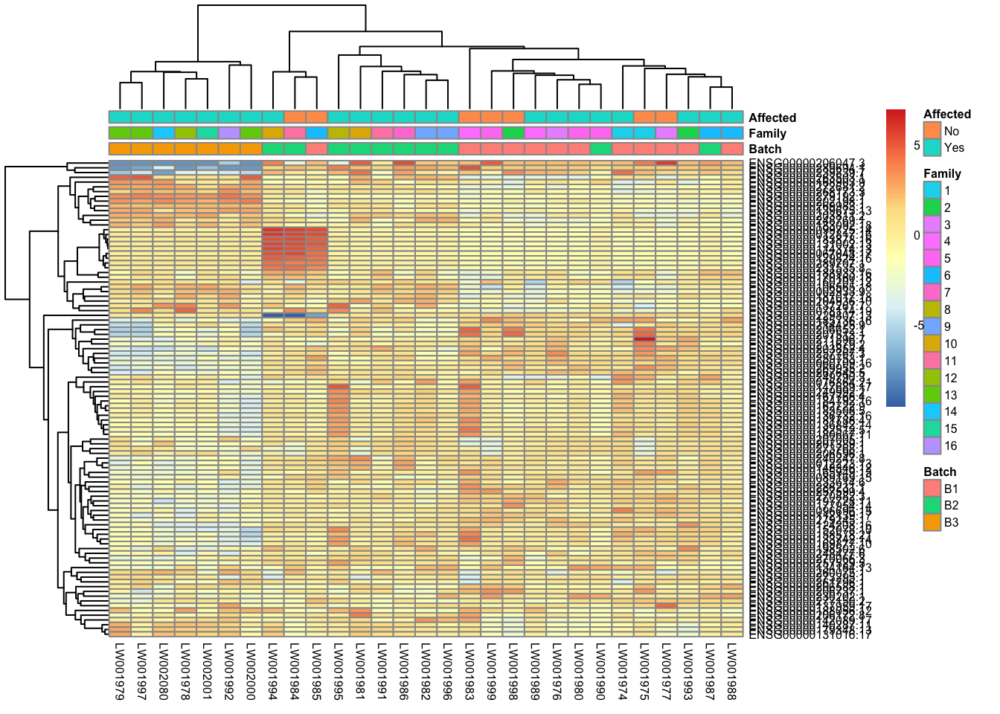

Initial Differential Gene Expression (DGE) Analysis
Last updated: 2023-07-24
Checks: 7 0
Knit directory: mecfs-dge-analysis/
This reproducible R Markdown analysis was created with workflowr (version 1.7.0). The Checks tab describes the reproducibility checks that were applied when the results were created. The Past versions tab lists the development history.
Great! Since the R Markdown file has been committed to the Git repository, you know the exact version of the code that produced these results.
Great job! The global environment was empty. Objects defined in the global environment can affect the analysis in your R Markdown file in unknown ways. For reproduciblity it’s best to always run the code in an empty environment.
The command set.seed(20230618) was run prior to running
the code in the R Markdown file. Setting a seed ensures that any results
that rely on randomness, e.g. subsampling or permutations, are
reproducible.
Great job! Recording the operating system, R version, and package versions is critical for reproducibility.
Nice! There were no cached chunks for this analysis, so you can be confident that you successfully produced the results during this run.
Great job! Using relative paths to the files within your workflowr project makes it easier to run your code on other machines.
Great! You are using Git for version control. Tracking code development and connecting the code version to the results is critical for reproducibility.
The results in this page were generated with repository version 4dac31c. See the Past versions tab to see a history of the changes made to the R Markdown and HTML files.
Note that you need to be careful to ensure that all relevant files for
the analysis have been committed to Git prior to generating the results
(you can use wflow_publish or
wflow_git_commit). workflowr only checks the R Markdown
file, but you know if there are other scripts or data files that it
depends on. Below is the status of the Git repository when the results
were generated:
Ignored files:
Ignored: .DS_Store
Ignored: .Rhistory
Ignored: .Rproj.user/
Ignored: data/.DS_Store
Ignored: output/batch-correction-limma/
Unstaged changes:
Modified: analysis/_site.yml
Note that any generated files, e.g. HTML, png, CSS, etc., are not included in this status report because it is ok for generated content to have uncommitted changes.
These are the previous versions of the repository in which changes were
made to the R Markdown (analysis/initial-analysis.Rmd) and
HTML (docs/initial-analysis.html) files. If you’ve
configured a remote Git repository (see ?wflow_git_remote),
click on the hyperlinks in the table below to view the files as they
were in that past version.
| File | Version | Author | Date | Message |
|---|---|---|---|---|
| Rmd | 4dac31c | sdhutchins | 2023-07-24 | Add initial analysis. |
library(tidyverse) # Available via CRAN
library(DESeq2) # Available via Bioconductor
library(RColorBrewer) # Available via CRAN
library(pheatmap) # Available via CRAN
library(genefilter) # Available via Bioconductor
library(limma) # Available via BioconductorData Import
We will be importing counts data from the star-salmon pipeline and our metadata for the project which is hosted on Box. This code block also ensures data is properly ordered by sample id.
counts <- read_tsv("data/star-salmon/salmon.merged.gene_counts_length_scaled.tsv")
# Use first column (gene_id) for row names
counts = data.frame(counts, row.names = 1)
counts$Ensembl_ID = row.names(counts)
drop = c("Ensembl_ID","gene_name")
gene_names = counts[,drop]
counts = counts[ , !(names(counts) %in% drop)] # remove both columns
# Import metadata
sample_metadata <- read_csv("data/MECFS_RNAseq_metadata_2023_06_23.csv")
row.names(sample_metadata) <- sample_metadata$RNA_Samples_id
# Order sample_metadata
sample_metadata <- arrange(sample_metadata, RNA_Samples_id)
# Check that data is ordered properly
all(rownames(sample_metadata) %in% colnames(counts)) [1] TRUE[1] TRUEDESeq2 Analysis
sample_metadata$Family = factor(sample_metadata$Family)
sample_metadata$Affected = factor(sample_metadata$Affected)
sample_metadata$Batch = factor(sample_metadata$Batch)
sample_metadata$Gender = factor(sample_metadata$Gender)
# Account for Family later but batch is accounted for
dds <- DESeqDataSetFromMatrix(countData = round(counts), colData = sample_metadata, design = ~ Batch + Affected)
# Pre-filtering: Keep only rows that have atleast 10 reads total
keep = rowSums(counts(dds)) >= 10
dds = dds[keep,]
# Run DESeq function
dds = DESeq(dds)
head(counts(dds, normalized=TRUE)) LW001974 LW001975 LW001976 LW001977
ENSG00000000003.15 6.283344 2.05296 7.223942 4.264822
ENSG00000000419.14 921.557182 1043.92997 850.017210 859.361676
ENSG00000000457.14 1114.246411 746.25082 829.549373 916.936776
ENSG00000000460.17 234.578192 189.89876 193.842452 328.391311
ENSG00000000938.13 12201.207645 11118.82929 15551.943765 17490.035904
ENSG00000000971.17 83.777926 130.36294 167.354663 197.248027
LW001978 LW001979 LW001980 LW001981
ENSG00000000003.15 3.565091 14.47998 4.573315 10.46587
ENSG00000000419.14 910.286661 866.16626 868.015180 1118.80153
ENSG00000000457.14 1100.424867 971.47523 1048.203789 1003.67696
ENSG00000000460.17 294.714219 276.43604 185.676587 252.22747
ENSG00000000938.13 10116.540921 10099.13001 18749.676681 21708.30816
ENSG00000000971.17 553.777525 143.48347 222.263107 216.64352
LW001982 LW001983 LW001984 LW001985
ENSG00000000003.15 17.45822 6.161279 5.718447 9.434676
ENSG00000000419.14 979.40627 1059.740056 924.754609 919.356806
ENSG00000000457.14 1104.23256 635.844033 901.880820 939.274457
ENSG00000000460.17 374.47887 144.173938 303.894624 263.122644
ENSG00000000938.13 19973.95218 23219.397520 19682.078435 13836.477178
ENSG00000000971.17 107.36807 27.109629 86.593629 116.361010
LW001986 LW001987 LW001988 LW001989 LW001990
ENSG00000000003.15 14.3010 8.261848 20.80204 11.32375 7.592455
ENSG00000000419.14 894.8338 840.642993 896.56804 949.93645 832.458476
ENSG00000000457.14 1046.6967 747.008720 897.60814 859.34649 1079.755586
ENSG00000000460.17 305.7689 232.708707 200.73971 223.95853 264.651294
ENSG00000000938.13 14919.3442 14147.037031 13752.23045 14215.07557 13223.345284
ENSG00000000971.17 222.6869 227.200809 160.17573 163.56522 143.172011
LW001991 LW001992 LW001993 LW001994
ENSG00000000003.15 5.130748 3.925784 7.688938 12.43332
ENSG00000000419.14 1002.206201 917.324885 997.639691 920.06541
ENSG00000000457.14 903.866855 1092.676575 897.683498 885.63469
ENSG00000000460.17 217.201685 378.183869 149.934289 273.53296
ENSG00000000938.13 14667.099624 8978.268242 13184.606244 15375.23032
ENSG00000000971.17 149.646830 294.433808 152.817641 124.33316
LW001995 LW001996 LW001997 LW001998 LW001999
ENSG00000000003.15 4.865262 13.74314 6.723075 11.82344 3.302019
ENSG00000000419.14 1119.010269 992.12394 808.113622 1212.74707 893.746405
ENSG00000000457.14 904.938740 897.23081 935.852048 728.83058 989.504949
ENSG00000000460.17 515.717776 293.84146 404.729118 143.57034 159.597572
ENSG00000000938.13 15497.481354 14288.28620 9146.071308 8941.89828 16707.114147
ENSG00000000971.17 229.478193 126.96045 208.415327 369.06021 184.913049
LW002000 LW002001 LW002080
ENSG00000000003.15 10.49324 9.01276 4.661212
ENSG00000000419.14 1437.57367 736.47124 918.258773
ENSG00000000457.14 1143.76299 987.54098 1041.780892
ENSG00000000460.17 339.71860 350.21010 205.093330
ENSG00000000938.13 8890.39630 10409.73770 12261.318282
ENSG00000000971.17 247.90276 133.90386 209.754542[1] "Intercept" "Batch_B2_vs_B1" "Batch_B3_vs_B1"
[4] "Affected_Yes_vs_No"# Normalize gene counts for differences in seq. depth/global differences
counts_norm = counts(dds, normalized=TRUE)Data transformation and visualization
Perform count data transformation by variance stabilizing transformation (vst) on normalized counts.
Batch correction, transformation and plotting
counts_vst = assay(vsd)
write.csv(counts_vst, file="output/counts_vst.csv")
mm = model.matrix(~ Family + Affected, colData(vsd))
counts_vst_limma = limma::removeBatchEffect(counts_vst, batch=vsd$Batch, design=mm)Coefficients not estimable: batch2 Sample distances heatmap
sampleDists = dist(t(assay(vsd_limma)))
sampleDistMatrix = as.matrix(sampleDists)
rownames(sampleDistMatrix) = paste(vsd_limma$Batch, vsd_limma$Family, sep=" | ")
colnames(sampleDistMatrix) = paste(vsd_limma$RNA_Samples_id, vsd_limma$Family, sep=" | ")
colors = colorRampPalette(rev(brewer.pal(9, "Blues")))(255)
pheatmap(sampleDistMatrix, clustering_distance_rows=sampleDists, clustering_distance_cols=sampleDists, col=colors)
Principal Components Analysis
pcaData = plotPCA(vsd, intgroup=c("Batch", "Family", "Affected"), returnData=TRUE)
percentVar = round(100 * attr(pcaData, "percentVar"))
ggplot(pcaData, aes(PC1, PC2, shape=factor(Batch), fill=factor(Affected), color=factor(Family))) +
geom_point(size=5) + xlab(paste0("PC1: ",percentVar[1],"% variance")) + ylab(paste0("PC2: ",percentVar[2],"% variance")) + coord_fixed()
ggplot(pcaData, aes(PC1, PC2, shape=factor(Batch), color=factor(Affected))) +
geom_point(size=5) + xlab(paste0("PC1: ",percentVar[1],"% variance")) + ylab(paste0("PC2: ",percentVar[2],"% variance")) + coord_fixed()
Heatmap of top 50 & top 100 genes
This is a heatmap for 50 genes with the highest variance across samples
topVarGenes = head(order(-rowVars(assay(vsd))),50)
mat = assay(vsd_limma)[ topVarGenes, ]
mat = mat - rowMeans(mat)
df = as.data.frame(colData(vsd)[,c("Batch", "Affected")])
pheatmap(mat, annotation_col=df, fontsize = 5)
This is a heatmap of the top 100 genes with the highest variance across samples
topVarGenes = head(order(-rowVars(assay(vsd_limma))),100)
mat = assay(vsd_limma)[ topVarGenes, ]
mat = mat - rowMeans(mat)
df = as.data.frame(colData(vsd_limma)[,c("Batch", "Family", "Affected")])
pheatmap(mat, annotation_col=df, fontsize = 6)
Comparison/Contrast of Affected_Yes_vs_No
res_aff_vs_unaff = results(dds, contrast=c("Affected", "Yes", "No"))
res_aff_vs_unaff= res_aff_vs_unaff[order(res_aff_vs_unaff$padj),]
summary(res_aff_vs_unaff)
out of 29624 with nonzero total read count
adjusted p-value < 0.1
LFC > 0 (up) : 34, 0.11%
LFC < 0 (down) : 30, 0.1%
outliers [1] : 162, 0.55%
low counts [2] : 6, 0.02%
(mean count < 0)
[1] see 'cooksCutoff' argument of ?results
[2] see 'independentFiltering' argument of ?resultswrite.csv(res_aff_vs_unaff, file="output/res_aff_vs_unaff.csv")
res_aff_vs_unaff_df = as.data.frame(res_aff_vs_unaff)
res_aff_vs_unaff_05 = subset(res_aff_vs_unaff_df, padj < 0.05) topgenes_byensemblid = head(rownames(res_aff_vs_unaff_05),50)
topgenes_aff_vs_unaff_05 = assay(vsd_limma)[topgenes_byensemblid,]
topgenes_aff_vs_unaff_05 = topgenes_aff_vs_unaff_05 - rowMeans(topgenes_aff_vs_unaff_05)
# Convert ensemblids
ensemblids <- topgenes_byensemblid
rownames(topgenes_aff_vs_unaff_05) <- gene_names$gene_name[match(ensemblids, gene_names$Ensembl_ID)]
df = as.data.frame(colData(vsd_limma)[,c("Batch", "Family", "Affected")])
pheatmap(topgenes_aff_vs_unaff_05, annotation_col=df, fontsize = 5)
res_aff_vs_unaff_df_genename = res_aff_vs_unaff_df
res_aff_vs_unaff_df_genename$Ensembl_ID = row.names(res_aff_vs_unaff_df)
res_aff_vs_unaff_df_genename = merge(x=res_aff_vs_unaff_df_genename, y=gene_names, by.x ="Ensembl_ID", by.y="Ensembl_ID", all.x=T)
res_aff_vs_unaff_df_genename = res_aff_vs_unaff_df_genename[,c(dim(res_aff_vs_unaff_df_genename)[2],1:dim(res_aff_vs_unaff_df_genename)[2]-1)]
res_aff_vs_unaff_df_genename = res_aff_vs_unaff_df_genename[order(res_aff_vs_unaff_df_genename[,"padj"]),]
write.csv(res_aff_vs_unaff_df_genename,file="output/res_aff_vs_unaff_genename.csv" )res_aff_vs_unaff_df_genename_05= subset(res_aff_vs_unaff_df_genename, padj < 0.05)
res_aff_vs_unaff_df_genename_05 = res_aff_vs_unaff_df_genename_05[order(res_aff_vs_unaff_df_genename_05$padj),]
write.csv(res_aff_vs_unaff_df_genename_05, file="output/res_aff_vs_unaff_df_genename_05.csv")
R version 4.1.1 (2021-08-10)
Platform: x86_64-apple-darwin17.0 (64-bit)
Running under: macOS Big Sur 10.16
Matrix products: default
BLAS: /Library/Frameworks/R.framework/Versions/4.1/Resources/lib/libRblas.0.dylib
LAPACK: /Library/Frameworks/R.framework/Versions/4.1/Resources/lib/libRlapack.dylib
locale:
[1] en_US.UTF-8/en_US.UTF-8/en_US.UTF-8/C/en_US.UTF-8/en_US.UTF-8
attached base packages:
[1] stats4 stats graphics grDevices utils datasets methods
[8] base
other attached packages:
[1] limma_3.50.3 genefilter_1.76.0
[3] pheatmap_1.0.12 RColorBrewer_1.1-3
[5] DESeq2_1.34.0 SummarizedExperiment_1.24.0
[7] Biobase_2.54.0 MatrixGenerics_1.6.0
[9] matrixStats_1.0.0 GenomicRanges_1.46.1
[11] GenomeInfoDb_1.30.1 IRanges_2.28.0
[13] S4Vectors_0.32.4 BiocGenerics_0.40.0
[15] lubridate_1.9.2 forcats_1.0.0
[17] stringr_1.5.0 dplyr_1.1.2
[19] purrr_1.0.1 readr_2.1.4
[21] tidyr_1.3.0 tibble_3.2.1
[23] ggplot2_3.4.2.9000 tidyverse_2.0.0
[25] workflowr_1.7.0
loaded via a namespace (and not attached):
[1] bitops_1.0-7 fs_1.6.2 bit64_4.0.5
[4] httr_1.4.6 rprojroot_2.0.3 tools_4.1.1
[7] bslib_0.5.0 utf8_1.2.3 R6_2.5.1
[10] DBI_1.1.3 colorspace_2.1-0 withr_2.5.0
[13] tidyselect_1.2.0 processx_3.8.1 bit_4.0.5
[16] compiler_4.1.1 git2r_0.32.0 cli_3.6.1
[19] DelayedArray_0.20.0 labeling_0.4.2 sass_0.4.6
[22] scales_1.2.1 callr_3.7.3 digest_0.6.32
[25] rmarkdown_2.22 XVector_0.34.0 pkgconfig_2.0.3
[28] htmltools_0.5.5 highr_0.10 fastmap_1.1.1
[31] rlang_1.1.1 rstudioapi_0.14 RSQLite_2.3.1
[34] farver_2.1.1 jquerylib_0.1.4 generics_0.1.3
[37] jsonlite_1.8.5 vroom_1.6.3 BiocParallel_1.28.3
[40] RCurl_1.98-1.12 magrittr_2.0.3 GenomeInfoDbData_1.2.7
[43] Matrix_1.5-4.1 Rcpp_1.0.10 munsell_0.5.0
[46] fansi_1.0.4 lifecycle_1.0.3 stringi_1.7.12
[49] whisker_0.4.1 yaml_2.3.7 zlibbioc_1.40.0
[52] grid_4.1.1 blob_1.2.4 parallel_4.1.1
[55] promises_1.2.0.1 crayon_1.5.2 lattice_0.21-8
[58] splines_4.1.1 Biostrings_2.62.0 annotate_1.72.0
[61] hms_1.1.3 KEGGREST_1.34.0 locfit_1.5-9.8
[64] knitr_1.43 ps_1.7.5 pillar_1.9.0
[67] geneplotter_1.72.0 XML_3.99-0.14 glue_1.6.2
[70] evaluate_0.21 getPass_0.2-2 png_0.1-8
[73] vctrs_0.6.3 tzdb_0.4.0 httpuv_1.6.11
[76] gtable_0.3.3 cachem_1.0.8 xfun_0.39
[79] xtable_1.8-4 later_1.3.1 survival_3.5-5
[82] AnnotationDbi_1.56.2 memoise_2.0.1 timechange_0.2.0